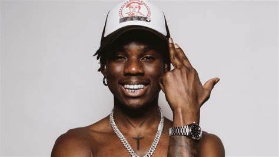

Divine Ikubor (born 1 May 2000), known mononymously as Rema, is a Nigerian singer, rapper, and songwriter. After gaining recognition after posting a viral freestyle on Instagram in 2018 to D'Prince's song "Gucci Gang", Rema began his professional music career in 2019 with the release of his debut single, "Dumebi" He followed up with the extended plays Rema (2019) and Rema Freestyle (2019). Rema's debut studio album, Rave & Roses, released in 2022, was met with commercial success, debuting at number 81 on the Billboard 200. It spawned the hit single "Calm Down" and its remix featuring Selena Gomez, peaking at number three on the US Billboard Hot 100 chart.[7] The song spent a record-breaking 58 weeks at number one on the U.S Bilboard Afrobeats Songs chart.[8] His fourth commercial EP, Ravage, was released in 2023. Rema’s second album, Heis, was released in 2024, supported by the lead single "Benin Boys" with Shallipopi.[9] Early life Divine Ikubor was born into a Christian family in Benin City, Edo State, Nigeria.[10] He discovered his passion for music during his secondary school days at Ighile Group of Schools in Edo State, where he began singing and rapping.[11] After losing his father and elder brother, Rema was raised by his mother, who played a significant role in shaping his life.[1]
Career 2019–2021: Career beginnings and record deals Rema started his music career performing in churches with his collaborator Alpha P. in 2019. He gained recognition after posting a viral freestyle on Instagram to D'Prince's song "Gucci Gang". Impressed by his talent, D'Prince flew him to Lagos and offered him a record deal with Jonzing World, a subsidiary of Mavin Records owned by music executive and producer Don Jazzy.[12][13] In 2019, Rema released his self-titled debut EP Rema, which topped Apple Music's Nigerian charts.[14][15] The music video for "Dumebi", a breakout song from the EP, was released on 21 May 2019, featuring a cameo appearance from Diana Eneje and has since gained 75 million views on YouTube.[16] Later that summer, another popular song from the EP was featured on former United States President Barack Obama's annual summer playlist.[11] In September 2020, Rema's songs were included on the FIFA 21 official soundtrack.[17][18] In September 2021, he was unveiled as a brand ambassador for Pepsi, alongside his label mate Ayra Starr.[19] Toya Delazy, a South African music producer and artist, originated the genre "Afrorave" in 2019, combining elements of garage, Zulu lyrics, and other African styles.[20][21] In May 2021, Rema adopted the term "Afrorave" to describe his own music, which blends Afrobeats with Arabian and Indian influences. This distinct sound has resonated with fans, earning him a dedicated fanbase known as Ravers.[22][23]
2022–23: Rave & Roses and Ravage EP After releasing three EPs, Rema debuted his first album, Rave & Roses, on 25 March 2022, under Jonzing World.[24] The album features 16 tracks, including collaborations with 6lack,
Chris Brown, AJ Tracey, and Yseult.[25] It charted 10 songs on the US Billboard Afrobeats Chart in its debut week.[26] The single
"Calm Down" gained international recognition after a remix with Selena Gomez, reaching number three on the Billboard Hot 100 and breaking multiple records.[27][28][29][30] Rema received various awards, including the MTV Video Music Award for Best Afrobeats Video and the Billboard Music Award for Top Afrobeats Song and many other awards.[31][32][33] On 7 November 2022, he was awarded for achieving 1 billion streams worldwide during his London concert.[34] In February 2023, he won the Digital Artist of the Year award at the Soundcity MVP Awards held at the Eko Convention Centre in Lagos.[35] In April 2023, he released Rave & Roses Ultra, which became the first African album to cross two billion streams on Spotify.[36] On 26 October 2023, Rema released the Ravage EP,[37] and on 30 October 2023, he performed at the Ballon d'Or ceremony held Theatre du Châtelet in Paris, France.[38] Personal life On 28 September 2020, Rema tweeted accusations against the Peoples Democratic Party (PDP) regarding their involvement in the death of his father, Justice Ikubor, a former chieftain of the party.[39][40] Although Rema gained admission to study at the University of Lagos in 2022, he was forced to leave the institution in 2023 due to the ongoing ASUU teaching union strike Impact Rolling Stone said "Rema has undoubtedly and proudly become an emblem of Afrobeats global rise."[43] Writing for Business Day Anthony Udugba remarked Rema has "expanded the horizons" of African musical impact on the global stage.[44] The Guardian Nigeria opined "As the Afrobeats landscape continues to flourish, Rema’s success sets a high standard, showcasing the global appeal and dominance of Nigerian music on the international stage."[45] The Native stated "It’s impossible to erase the mark he has left on Afrobeats history."[46] Victor Okpala said "Rema’s sound has cemented his place as a true musical trailblazer."[47] Many critics have praised him for breaking barriers and inspiring other African music artists.